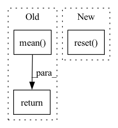

Pattern ID :21396
Before Change
num_batches += 1
self.scheduler.step()
epoch_loss = np.mean( current_epoch_losses)
epoch_reg = np.mean(current_epoch_reg_losses)
return epoch_loss, epoch_reg, num_batches
def _add_batch_regualarizations(self, loss, reg_lambda_ar):
Add regulatization terms to loss, if applicableAfter Change
e (int): current epoch number
loader (torch DataLoader): Training Dataloader
for metric in self.metrics: metric.reset()
for metric in self.value_metrics.values(): metric.reset()
reg_lambda_ar = None
if self.n_lags > 0: // slowly increase regularization until lambda_delay epochIn pattern: SUPERPATTERN
Frequency: 3
Non-data size: 3
Instances Fragment ID: 68205872
Project Name: ourownstory/neural_prophet
Commit Name: ea05689f7ccca059223f80c7bd85f8b7943e69d0
Time: 2020-06-16
Author: oskar.triebe@merantix.com
File Name: neuralprophet/neural_prophet.py
M Class Name: NeuralProphet
N Class Name: NeuralProphet
M Method Name: _train_epoch(3)
N Method Name: _train_epoch(3)
M Parent Class:
N Parent Class:
M File Name: neuralprophet/neural_prophet.py
N File Name: neuralprophet/neural_prophet.py
M Start Line: 322
M End Line: 345
N Start Line: 291
N End Line: 319
Before Change
if verbose:
print(act)
return act
return np.mean( player.play_one_episode(f))
//////////////////////////////////////////////////////////////////////////////////////////////////////////////////////////////////////////////////////////////
def play_model(cfg, player):After Change
// act = spc.sample()
return act
ob = env.reset()
sum_r = 0
while True:
act = predict(ob)
ob, r, isOver, info = env.step(act) Fragment ID: 68205869
Project Name: gml16/rl-medical
Commit Name: 2d903de1af7d2b239a1b5ccee77d05befee8db86
Time: 2017-11-01
Author: aa16914@wensum.doc.ic.ac.uk
File Name: examples/LandmarkDetection3D/DQN/common.py
M Class Name: AnonimousClass
N Class Name: AnonimousClass
M Method Name: play_one_episode(3)
N Method Name: play_one_episode(3)
M Parent Class:
N Parent Class:
M File Name: examples/LandmarkDetection3D/DQN/common.py
N File Name: examples/LandmarkDetection3D/DQN/common.py
M Start Line: 36
M End Line: 36
N Start Line: 39
N End Line: 52
Before Change
if verbose:
print(act)
return act
return np.mean( player.play_one_episode(f))
//////////////////////////////////////////////////////////////////////////////////////////////////////////////////////////////////////////////////////////////
def play_model(cfg, player):After Change
// act = spc.sample()
return act
ob = env.reset()
sum_r = 0
while True:
act = predict(ob)
ob, r, isOver, info = env.step(act) Fragment ID: 68205870
Project Name: gml16/rl-medical
Commit Name: 249c649721c645c497311bacc239a3d6a448851e
Time: 2018-01-09
Author: aa16914@wensum.doc.ic.ac.uk
File Name: examples/plane_detection/ultrasound_fetal_brain_detection/common.py
M Class Name: AnonimousClass
N Class Name: AnonimousClass
M Method Name: play_one_episode(3)
N Method Name: play_one_episode(3)
M Parent Class:
N Parent Class:
M File Name: examples/plane_detection/ultrasound_fetal_brain_detection/common.py
N File Name: examples/plane_detection/ultrasound_fetal_brain_detection/common.py
M Start Line: 36
M End Line: 36
N Start Line: 39
N End Line: 52